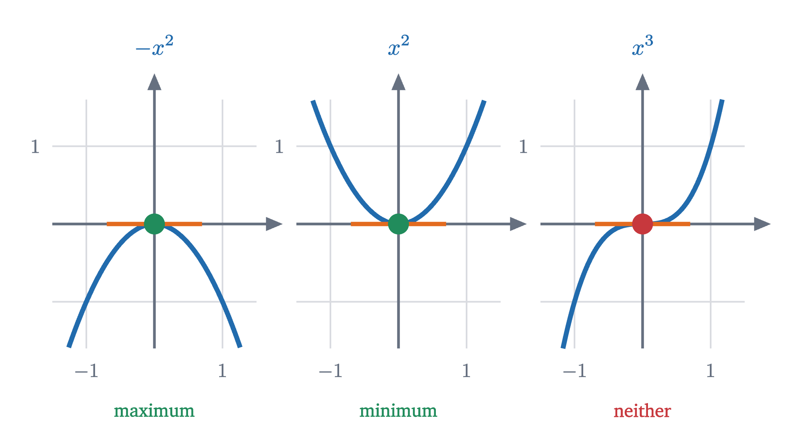
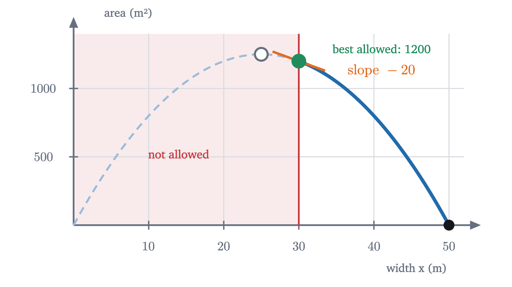
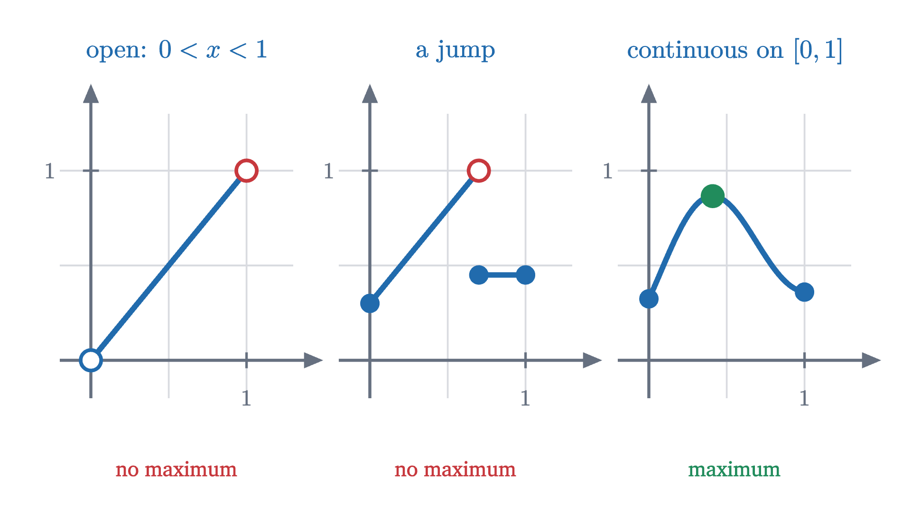
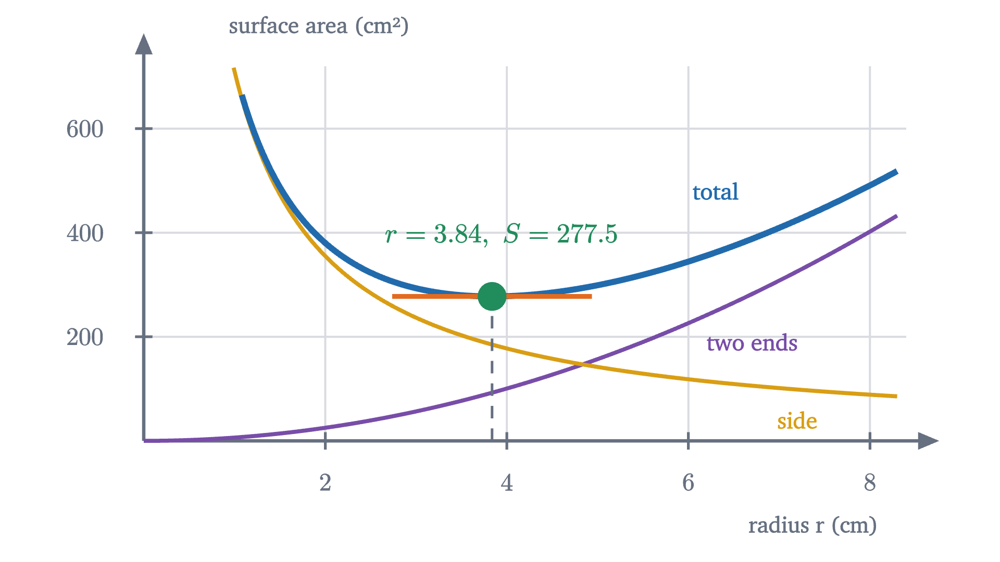

Maxima and minima: where the slope is zero
To fence the largest field or make the cheapest can, look where the derivative is zero, and also at the ends. Why that works, and when it does not.
AssumesWhat is a derivative? Speed at a single instantWhy the derivative of x² is 2x: the power rule from picturesWhat is a limit? The epsilon-delta definition, explained
A farmer has 100 meters of fence and wants to enclose a rectangular field along a straight river. The river serves as one side, so the fence is needed only for the other three. What shape of rectangle encloses the most land?
Most people’s first guess is a square. It is a reasonable guess, and it is wrong, and finding out why takes a few minutes of arithmetic. Finding a method that answers every question of this kind is the subject of this lesson, and it is one of the main reasons calculus is used at all.
Try some fields
Call the width of the field $x$ meters, meaning the length of each of the two sides that run away from the river. Those two sides use $2x$ meters of fence, which leaves $100 - 2x$ meters for the side parallel to the river. The area is width times length:
The limits on $x$ come from the fence: the width cannot be negative, and at $x = 50$ the two sides use all the fence and nothing is left for the third.
Pause and try
Compute the area for widths of 10, 20, 30 and 40 meters, and for the square field. (For a square, the three fenced sides are equal, so $x = \frac{100}{3}$.) What do you notice about 20 and 30?
Show answerHide answer
$A(10) = 10 \times 80 = 800$, $A(20) = 20 \times 60 = 1200$, $A(30) = 30 \times 40 = 1200$, $A(40) = 40 \times 20 = 800$. The square has $A = \frac{100}{3} \times \frac{100}{3} \approx 1111$, which is less than both 1200s. The areas at 20 and 30 are equal, and so are those at 10 and 40: the values are symmetric about $x = 25$, which suggests looking there. $A(25) = 25 \times 50 = 1250$.
So a field 25 m wide and 50 m long beats the square by about 139 square meters. Is 1250 the best possible, or would 24.9 or 25.3 do slightly better? We could keep trying values, but trying values can never rule out all the others. Plot the area against the width, as in the animation, and the question changes character. The graph is a hill, and we are looking for its top.
At the top, the graph is flat
To see what distinguishes the top of a hill from every other point on it, walk along the graph from left to right. On the way up, the ground slopes upward. On the way down, it slopes downward. At the top it does neither.
The slope of a graph at a point is the derivative. For $A(x) = 100x - 2x^2$ the power rule gives
measured in square meters of area per meter of width.
Setting the slope to zero gives $100 - 4x = 0$, so $x = 25$, the value our table pointed to. For this particular function we can confirm it without calculus. Completing the square gives $A(x) = 1250 - 2(x - 25)^2$, which is 1250 minus something that is never negative, so no width does better than 25. But completing the square works only for quadratics, and the slope idea promises to work for any function that has a derivative. Before relying on it we should ask why the slope at the top has to be zero. “The picture looks flat” is an observation about one picture.
Pause and try
At a width of 15 m the slope is $A'(15) = 40$ square meters per meter. Without computing any areas, explain why $x = 15$ cannot be the best width. Then do the same for $x = 35$, where $A'(35) = -40$.
Show answerHide answer
A slope of 40 means that near $x = 15$, each extra meter of width adds about 40 square meters. So a slightly wider field, say 15.1 m, has more area (about 4 m² more), and 15 is not the best. At $x = 35$ the slope is $-40$: each extra meter of width costs about 40 square meters, so each meter less gains about 40, and a slightly narrower field is better. A nonzero slope always points to a better neighbor, on one side or the other.
That is the whole argument, and it never used the formula for $A$. To state it as a theorem we need words for the things involved.
A global maximum is the highest point of the whole graph. A local maximum is the top of its own hill: highest among its near neighbors, with $\delta$ saying how near.
Compare the proof with the exercise. “Each extra meter adds area” was the quotient being positive for small positive $h$, which a maximum forbids. The step that needs care is the passage to the limit: quantities that are all $\le 0$ cannot have a positive limit, which the proof checked directly from the definition of a limit. Notice also where each hypothesis was used. The point $c$ had to be inside an open interval so that we could step both ways, and $f$ had to be differentiable at $c$ for there to be a slope to speak of. Both conditions matter, as we are about to see.
Three things the theorem does not say
Fermat’s theorem is a one-way statement: at an interior extremum with a derivative, the slope is zero. It is tempting to read more into it.
It does not say that slope zero means an extremum. Take $f(x) = x^3$. Then $f'(x) = 3x^2$ and $f'(0) = 0$. But $x^3$ is negative for $x < 0$ and positive for $x > 0$, so 0 is neither a local maximum nor a local minimum: the graph levels off for an instant and keeps climbing.

It does not say anything about points with no derivative. The function $|x|$ has its minimum at 0, at a corner, where it has no derivative. Solving $f'(x) = 0$ would never find it.
It does not say anything about endpoints. Suppose the farmer’s land is hemmed in so that the field must be at least 30 m wide. Now $x$ is restricted to $30 \le x \le 50$.
Pause and try
With the width restricted to $30 \le x \le 50$, what is the largest possible area, and what is the slope $A'(x)$ at the best width?
Show answerHide answer
On this interval $A'(x) = 100 - 4x$ is negative throughout (it is $-20$ at 30 and $-100$ at 50), so the area decreases as $x$ grows and the best choice is the smallest allowed width, $x = 30$, with $A(30) = 1200$ m². The slope there is $-20$, not zero. The farmer would like to step left, where the area is larger, and is not allowed to.

So the points where an extremum can hide are of three kinds: interior points where the derivative is zero, interior points where the derivative does not exist, and endpoints. The first two get a name.
Is there a maximum at all?
One question has been skipped. We have been asking where the maximum is, which assumes there is one. A function need not have a maximum.

On the open interval $0 < x < 1$, the function $f(x) = x$ takes values as close to 1 as you like and never the value 1. Whatever point you propose as the highest, the point halfway between it and 1 is higher. The second panel does the same thing on the closed interval $[0, 1]$ by means of a jump. What rules out both failures is the pair of conditions in the following theorem.
We quote this theorem without proof. It is due to Bolzano and Weierstrass, and its proof, found in any real analysis text, depends on the same completeness property of the real numbers that underlies limits: among the rational numbers alone it is false. It is believable because the two panels on the left show the ways to dodge it on a bounded interval, an endpoint that is missing or a break in the graph, and the hypotheses exclude both. The word “bounded” excludes a third: on $[0, \infty)$ the function $f(x) = x$ is continuous and has no maximum.
Put the extreme value theorem together with Fermat’s theorem and we have a complete method.
For the fence: $A$ is continuous on $[0, 50]$, its only critical point is $x = 25$, and $A(0) = 0$, $A(25) = 1250$, $A(50) = 0$. The maximum is 1250 m², and this time the conclusion is a theorem that owes nothing to the graph or to completing the square.
Hill or valley: the second derivative
The closed interval method needs no knowledge of whether a critical point is a hill or a valley, because it compares values. But often we want to know, and often there are no endpoints to compare with. The function $x^3 - 3x$ shows how to tell.
At a hilltop the slope goes from positive, through zero, to negative: the slope is decreasing. At the bottom of a valley it goes from negative to positive: the slope is increasing. Whether the slope $f'$ is decreasing or increasing is told by the sign of its derivative, the second derivative $f''$. Here $f''(x) = 6x$, so $f''(-1) = -6 < 0$ at the hilltop and $f''(1) = 6 > 0$ in the valley.
The proof uses the mean value theorem, quoted in an earlier lesson: if $f$ is continuous on $[p, q]$ and differentiable on $(p, q)$, then $f(q) - f(p) = f'(\xi)(q - p)$ for some $\xi$ between $p$ and $q$.
The second half of the proof is worth isolating, since it gives a global conclusion: if $f$ is continuous on an interval containing $c$, with $f' < 0$ at every point of the interval to the left of $c$ and $f' > 0$ at every point to the right, the same mean value argument shows $f(x) > f(c)$ for every other $x$ in the interval. That is the first derivative test, and it is what we use when the domain has no endpoints to check.
Worked examples

Real drink cans are taller than this, about 12 cm against a width of 6.6 cm. The model minimizes area, while a manufacturer minimizes cost, and the ends of a can are made of thicker metal than the side. An optimum is only ever the optimum of the function you wrote down.
Check yourself
On the interval $[0, 4]$, where does $f(x) = x^2 - 2x$ attain its maximum value?
Looking back: the calculation, solving $f'(x) = 0$, is the easy part. The care goes into the logic around it. Fermat’s theorem only narrows the search to a short list of candidates; the extreme value theorem, or an argument about the sign of $f'$, is what guarantees that the best candidate is the answer. The same two-step pattern, a necessary condition that produces candidates and then a separate argument that selects among them, reappears when there are several variables, where “slope zero” becomes “every partial slope zero”.
Problems
The first three are direct applications, the next four need you to set up the function or justify the conclusion, and the last asks for a proof.
Problem 1
Find the maximum and minimum values of $f(x) = x^2 - 4x + 1$ on $[0, 5]$.
Show solutionHide solution
$f$ is continuous on $[0, 5]$ and $f'(x) = 2x - 4$, which is zero only at $x = 2$. Candidates: $f(0) = 1$, $f(2) = 4 - 8 + 1 = -3$, $f(5) = 25 - 20 + 1 = 6$. The maximum is 6 at $x = 5$ and the minimum is $-3$ at $x = 2$.
Problem 2
With no river, 100 m of fence must go around all four sides of a rectangular field. Which rectangle has the largest area?
Show solutionHide solution
Let the sides be $x$ and $y$ with $2x + 2y = 100$, so $y = 50 - x$ and $A(x) = x(50 - x) = 50x - x^2$ on $[0, 50]$. $A'(x) = 50 - 2x = 0$ at $x = 25$. Candidates: $A(0) = 0$, $A(25) = 625$, $A(50) = 0$. The best field is the 25 m by 25 m square, with area 625 m². Here the first guess of a square is right; the river changed the answer because it made one side free.
Problem 3
Find the critical points of $f(x) = x^3 - 6x^2 + 9x + 2$ and classify each with the second derivative test.
Show solutionHide solution
$f'(x) = 3x^2 - 12x + 9 = 3(x - 1)(x - 3)$, zero at $x = 1$ and $x = 3$. $f''(x) = 6x - 12$. At $x = 1$: $f''(1) = -6 < 0$, a local maximum, with $f(1) = 1 - 6 + 9 + 2 = 6$. At $x = 3$: $f''(3) = 6 > 0$, a local minimum, with $f(3) = 27 - 54 + 27 + 2 = 2$. Neither is global on the whole real line, since $f(x)$ grows without bound as $x \to \infty$ and falls without bound as $x \to -\infty$.
Problem 4
Two positive numbers have product 36. How small can their sum be? Justify that your answer is a global minimum.
Show solutionHide solution
Call one number $x > 0$; the other is $\frac{36}{x}$, and the sum is $s(x) = x + \frac{36}{x}$ on $(0, \infty)$. $s'(x) = 1 - \frac{36}{x^2} = \frac{x^2 - 36}{x^2}$, which is zero for positive $x$ only at $x = 6$. For $0 < x < 6$ the numerator is negative, so $s' < 0$; for $x > 6$ it is positive. By the first derivative test $s$ has its global minimum on $(0, \infty)$ at $x = 6$, where both numbers are 6 and the sum is 12. (The domain is open, so the closed interval method was not available.)
Problem 5
Find and classify the critical points of $f(x) = x^4 - 4x^3$.
Show solutionHide solution
$f'(x) = 4x^3 - 12x^2 = 4x^2(x - 3)$, zero at $x = 0$ and $x = 3$. $f''(x) = 12x^2 - 24x$. At $x = 3$: $f''(3) = 108 - 72 = 36 > 0$, a local minimum, with $f(3) = 81 - 108 = -27$. At $x = 0$: $f''(0) = 0$, so the test is silent and we look at the sign of $f'$. The factor $4x^2$ is positive on both sides of 0 and $x - 3$ is negative near 0, so $f' < 0$ on both sides: the function is decreasing before 0 and after it, and 0 is neither a maximum nor a minimum. Since $f' \le 0$ for all $x < 3$ and $f' > 0$ for $x > 3$, the mean value theorem gives $f(x) - f(3) = f'(\xi)(x - 3) \ge 0$ for every $x$, so the value $-27$ is the global minimum.
Problem 6
Find the point on the line $y = 2x + 1$ that is closest to the origin, and the distance.
Show solutionHide solution
The distance from the origin to $(x, 2x + 1)$ is $\sqrt{x^2 + (2x+1)^2}$. A positive quantity is smallest exactly when its square is smallest, so minimize $D(x) = x^2 + (2x + 1)^2 = 5x^2 + 4x + 1$ over all real $x$. $D'(x) = 10x + 4$, zero at $x = -0.4$, negative before and positive after, so this is the global minimum. The point is $(-0.4,\ 0.2)$, and $D = 5(0.16) - 1.6 + 1 = 0.2$, so the distance is $\sqrt{0.2} \approx 0.447$. Check: the segment from the origin to $(-0.4, 0.2)$ has slope $-\frac12$, and $-\frac12 \times 2 = -1$, so it is perpendicular to the line, as the shortest segment should be.
Problem 7
A student argues: “Let $f(x) = \frac1x$ on $[-1, 1]$. Its derivative $-\frac{1}{x^2}$ is never zero, so there are no critical points. The endpoints give $f(-1) = -1$ and $f(1) = 1$. By the closed interval method the maximum value is 1.” Find the error.
Show solutionHide solution
The closed interval method requires $f$ to be continuous on the whole of $[-1, 1]$, and $\frac1x$ is not even defined at $x = 0$. The extreme value theorem therefore does not apply, and in fact there is no maximum: $f(0.001) = 1000$, and values just to the right of 0 are as large as you please. The conclusion “maximum 1” is false. The hypotheses of a theorem have to be checked before its conclusion is used.
Problem 8
(Rolle’s theorem.) Let $f$ be continuous on $[a, b]$ and differentiable on $(a, b)$, with $f(a) = f(b)$. Prove that there is a point $c$ in $(a, b)$ with $f'(c) = 0$.
Show solutionHide solution
By the extreme value theorem, $f$ has a global maximum at some $c_1$ and a global minimum at some $c_2$ in $[a, b]$.
Case 1: at least one of $c_1$, $c_2$ lies in the open interval $(a, b)$. Call it $c$. It is a local extremum at an interior point where $f$ is differentiable, so Fermat’s theorem gives $f'(c) = 0$.
Case 2: both are endpoints. Since $f(a) = f(b)$, the maximum value and the minimum value of $f$ are the same number. Then $f$ is constant on $[a, b]$, its difference quotients are all 0, and $f'(c) = 0$ at every $c$ in $(a, b)$.
This is the step on which the mean value theorem rests: applying Rolle’s theorem to $f$ minus the straight line through $(a, f(a))$ and $(b, f(b))$ gives a point where $f'$ equals the slope of that line. So the chain of reasoning in this series runs: completeness of the real numbers, extreme value theorem, Fermat and Rolle, mean value theorem, and then both the second derivative test here and the evaluation of integrals in the lesson on the fundamental theorem.